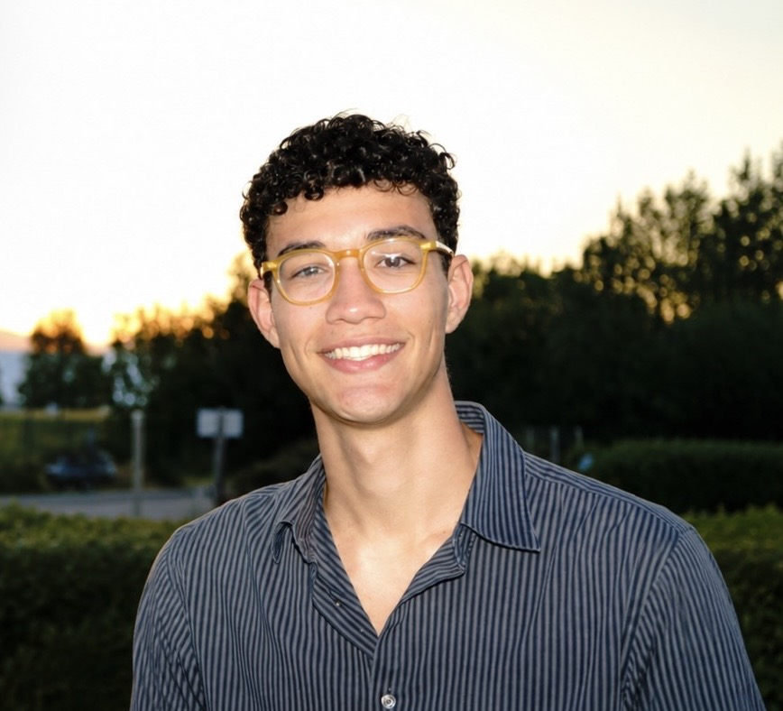

Ilian Grèverie
iliangreverie@gmail.com
First-year student at ENSEEIHT,
in SN (Digital Sciences), after a CPGE (French preparatory classes),
in MPSI (Mathematics, Physical Sciences and Engineering) then in PSI (Physical Sciences and Engineering).
I am particularly interested in medical robotics, signal processing and embedded systems.
I also aspire to return to Japan in the future to develop my academic and professional experience in an international environment.
ELEVATOR PITCH
Academic pathway
-
ENSEEIHT – SN
2026–2029, 1st year (current) -
CPGE MPSI PSI – Lycée Blaise Pascal
2024–2026 -
Baccalauréat Mathematics & Physics - Lycée Sainte-Thècle
2016-2024 -
Lycée Français International de Tokyo
2010-2016